用語ベース
「みんなの自動翻訳」の用語集のデータを
Tradosの用語ベース機能で利用します。
単語の翻訳候補の表示、
翻訳の標準化に利用できます。
用語ベースについての詳細は
Tradosマニュアルをご確認ください。
※ 現在、Trados上で用語を登録することはできません。
ブラウザ上の「みんなの自動翻訳」で行ってください。
プロジェクトの設定＞言語ペア＞すべての言語ペア＞用語ベース
使用＞TexTra
用語ベース
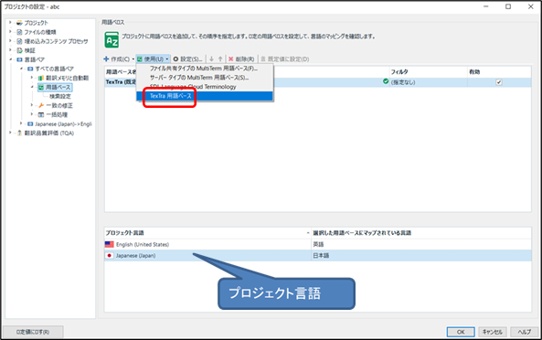
検索先の用語集を選択してください。
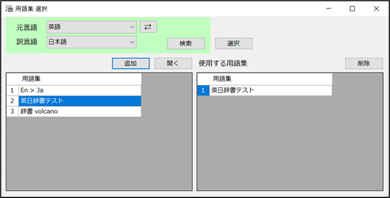
用語集を選択後、
プロジェクト言語の設定を行ってください。
翻訳エディタ上で
用語集の検索結果が表示されます。
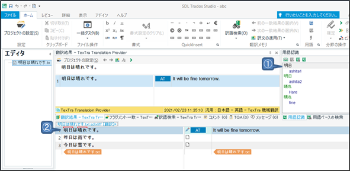
① 選択中の原文によって用語集を検索します。
同ウィンドウの「用語ベースの検索」で検索を行うことができます。
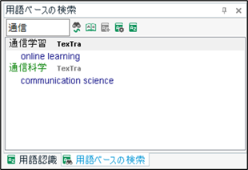
設定により、検索結果に辞書名を表示できます。
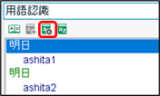
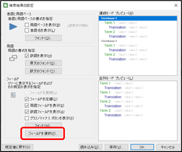
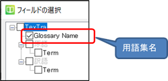
② Tradosの機能により、用語集に登録されている単語が
マークされます。
「用語の詳細」ボタンで
用語の詳細を表示します。
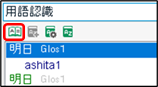
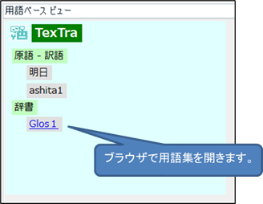
・用語登録
「みんなの自動翻訳」の用語集に用語の登録を行います。
用語集を利用した翻訳（カスタム翻訳）に利用できます。
翻訳エディタ上で登録したい単語の原文を選択します。
訳語がある場合は訳語も選択してください。
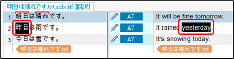
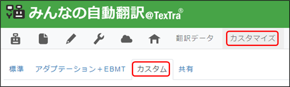
メニュー＞ホーム＞用語の「新しい用語の追加」を押してください。
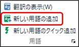
登録先の用語集を検索、選択してください。
原文、訳文を入力して登録ボタンを押してください。
修正、削除は開くボタンを押して、
「みんなの自動翻訳」上の編集画面で行ってください。
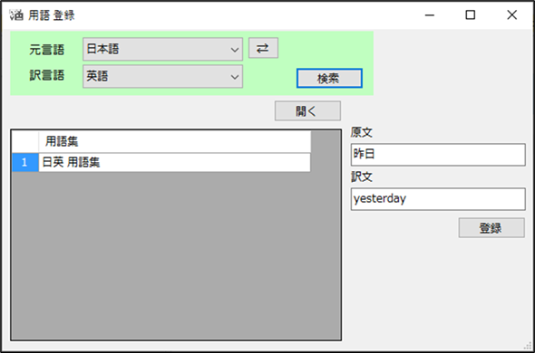